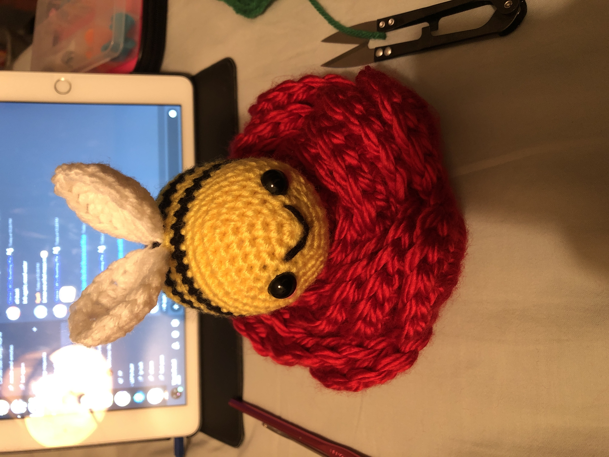
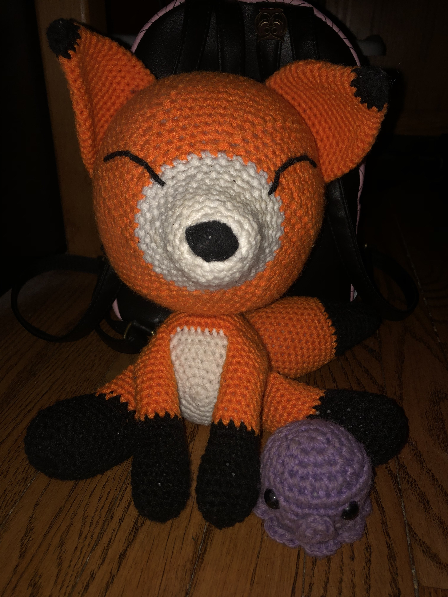

Crocheting
I've been crocheting on and off for several years now. My old nanny taught me the basic chain stitch when I was young and my friend taught me how to do the "magic circle" as well as how to make some basic granny squares. Mostly though, I really love making amigurumi toys.
Here's a few I've made in the past.

